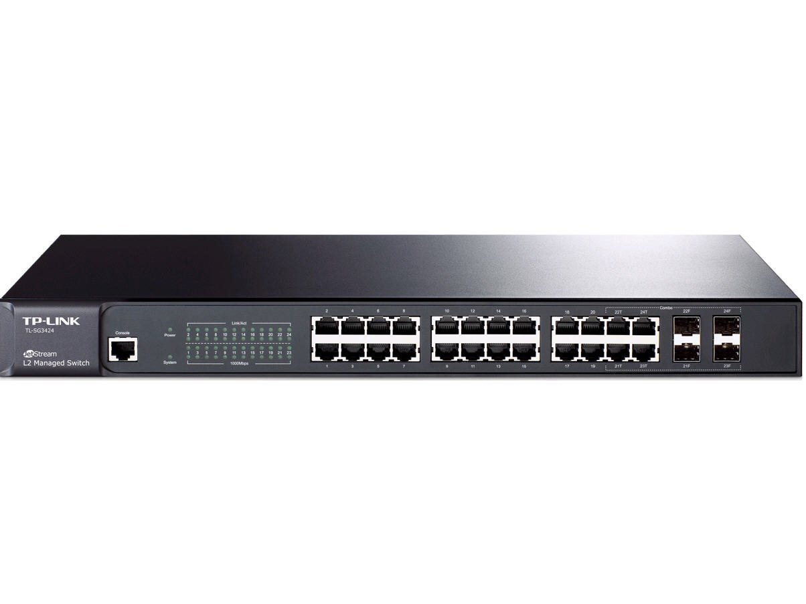

Descripción
Switch Administrable de 24 puertos PoE Gigabit y 04 puertos para fibra SFP capa L2, marca TP-LINK TL-SG3424P. Cumple con 802.3 at/af con una fuente de alimentación total de 320W. Incluye seguridad avanzada como IP-MAC-Puerto-VID, defensa DoS, snooping DHCP, autenticación 802.1X, QoS L2/L3/L4 y gestión vía WEB, CLI, SNMP, RMON.
Precio
U$ 509.00
Aplicaciones
- 24 puertos PoE con fuente de 320W
- Vinculación IP-MAC-Puerto-VID, defensa DoS, autenticación 802.1X
- QoS L2/L3/L4 e IGMP snooping para voz y video
- Administración por WEB, CLI, SNMP, RMON
Desempeño Superior
El switch cuenta con 24 puertos 10/100/1000 Mbps con PoE, 4 SFP Combo, alto rendimiento...
Ventajas
- ACL y políticas de seguridad avanzadas
- Calidad de servicio para integrar voz, video y datos
- Gestión vía Web, CLI, SNMP, RMON
- VLAN 802.1Q, Port Mirroring, STP/RSTP/MSTP, LACP
Especificaciones Técnicas
| Marca | TP-LINK |
|---|---|
| Modelo | SG3424P |
| Tipo | Administrable |
| Puertos SFP | 4 |
| Puertos Gigabit | 24 |
| Consumo | 320W |
| Velocidad | 10/100/1000 Mbps |
| Estándares de red | IEEE 802.1D, 802.1p, 802.1Q, 802.1s, 802.1w, 802.1x, 802.3ab, 802.3ad, 802.3i, 802.3u, 802.3x, 802.3z |